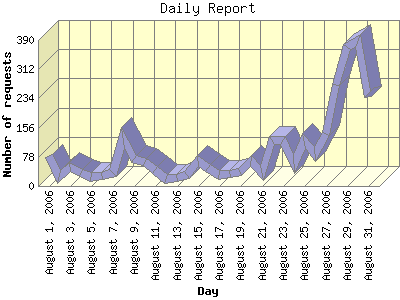

Report generated by Analog 6.0 and Report Magic 2.21
|
Web Server Statistics for "Harish Narayanan (hnarayan) - August 2006" Report generated by Analog 6.0 and Report Magic 2.21 |
The Daily Report identifies the activity for each day within the reporting period. Remember that one page hit can result in several server requests as the images for each page are loaded.

| Day | Number of requests | Number of bytes transferred | Percentage of the bytes | Percentage of the requests | |
|---|---|---|---|---|---|
| 1. | August 1, 2006 | 80 | 1.687 MB | 1.51% | 2.78% |
| 2. | August 2, 2006 | 24 | 518.880 KB | 0.46% | 0.83% |
| 3. | August 3, 2006 | 52 | 3.827 MB | 3.43% | 1.80% |
| 4. | August 4, 2006 | 34 | 615.809 KB | 0.54% | 1.18% |
| 5. | August 5, 2006 | 24 | 509.037 KB | 0.45% | 0.83% |
| 6. | August 6, 2006 | 28 | 138.496 KB | 0.12% | 0.97% |
| 7. | August 7, 2006 | 36 | 1.222 MB | 1.10% | 1.25% |
| 8. | August 8, 2006 | 128 | 3.743 MB | 3.36% | 4.44% |
| 9. | August 9, 2006 | 72 | 6.054 MB | 5.43% | 2.50% |
| 10. | August 10, 2006 | 63 | 1.588 MB | 1.43% | 2.19% |
| 11. | August 11, 2006 | 44 | 684.608 KB | 0.60% | 1.53% |
| 12. | August 12, 2006 | 19 | 3.453 MB | 3.10% | 0.66% |
| 13. | August 13, 2006 | 21 | 141.758 KB | 0.12% | 0.73% |
| 14. | August 14, 2006 | 29 | 607.939 KB | 0.53% | 1.01% |
| 15. | August 15, 2006 | 68 | 1.107 MB | 0.99% | 2.36% |
| 16. | August 16, 2006 | 49 | 850.077 KB | 0.74% | 1.70% |
| 17. | August 17, 2006 | 30 | 1.254 MB | 1.12% | 1.04% |
| 18. | August 18, 2006 | 31 | 3.486 MB | 3.13% | 1.08% |
| 19. | August 19, 2006 | 37 | 1.732 MB | 1.55% | 1.28% |
| 20. | August 20, 2006 | 66 | 1.589 MB | 1.43% | 2.29% |
| 21. | August 21, 2006 | 36 | 985.073 KB | 0.86% | 1.25% |
| 22. | August 22, 2006 | 123 | 5.448 MB | 4.89% | 4.27% |
| 23. | August 23, 2006 | 122 | 4.266 MB | 3.83% | 4.23% |
| 24. | August 24, 2006 | 58 | 2.430 MB | 2.18% | 2.01% |
| 25. | August 25, 2006 | 121 | 2.166 MB | 1.94% | 4.20% |
| 26. | August 26, 2006 | 85 | 2.457 MB | 2.21% | 2.95% |
| 27. | August 27, 2006 | 139 | 7.014 MB | 6.29% | 4.82% |
| 28. | August 28, 2006 | 269 | 7.580 MB | 6.80% | 9.33% |
| 29. | August 29, 2006 | 370 | 13.957 MB | 12.52% | 12.84% |
| 30. | August 30, 2006 | 386 | 12.204 MB | 10.95% | 13.39% |
| 31. | August 31, 2006 | 238 | 18.256 MB | 16.38% | 8.26% |
Most active day August 30, 2006 : 216 pages sent. 386 requests handled. 12,796,352.00 served.
Daily average: 92 requests handled. 3.595 MB served.
This report was generated on November 12, 2006 23:02.
Report time frame August 1, 2006 02:11 to August 31, 2006 23:57.
| Web statistics report produced by: | |
 Analog 6.0 Analog 6.0 |  Report Magic 2.21 Report Magic 2.21 |